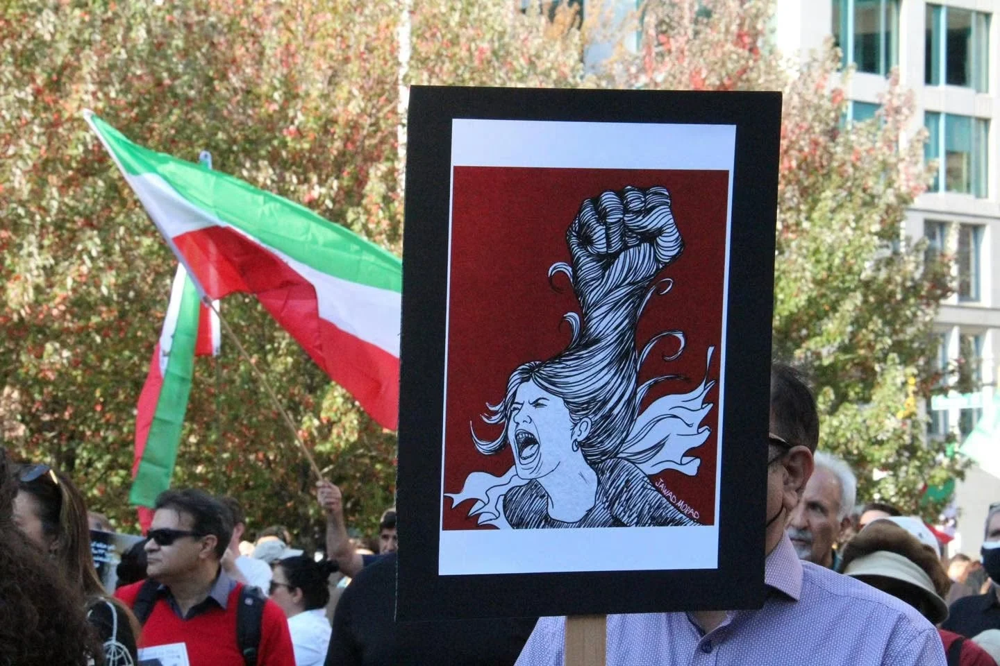

Publication relayée par le PCF 79
Iran. Les députés communistes appellent à un cessez-le-feu
Date de mise à jour indiquée par Facebook · 1 mars 2026
Texte de la publication · Les députés communistes
[Communiqué] Face à l’offensive Israélo-américaine en Iran, la France doit choisir la paix et le droit international
En juin dernier, nous dénoncions l’attaque israélienne contre l’Iran menée au nom de la « guerre préventive », une doctrine illégale en droit international.
Plus de huit mois plus tard, face à la nouvelle offensive israélo‑américaine en Iran, nous regrettons qu’une fois encore cette opération se déroule en complète violation de l’édifice juridique des Nations unies, construit au lendemain de la Seconde Guerre mondiale pour préserver les nations et les peuples du fléau de la guerre. Les "guerres préventives" ont toujours été au seul service du désordre global et de la violence.
Force est de constater que ces violations répétées et impérialistes, toujours menées sous couvert d’apporter la sécurité ou la justice, nous précipitent au seuil d’une troisième guerre mondiale.
À l’heure où l’embrasement régional semble inéluctable, il est urgent que la France défende une position indépendante et parle d’une voix forte. Seule nation de l’Union européenne membre permanent du Conseil de sécurité de l’ONU, elle doit faire entendre une voix singulière en ces temps où le droit international s’effondre à force de violations : celle de la paix, du respect du droit international et du multilatéralisme.
Par la voix du président Emmanuel Macron, la France a demandé une réunion urgente du Conseil de sécurité des Nations unies. Cette réunion doit avoir pour objectif un cessez‑le‑feu immédiat et la désescalade régionale. La France doit également obtenir le lancement de négociations multilatérales, sous l’égide de l’ONU, afin de parvenir, par la voie diplomatique, au respect par l’Iran de ses obligations nucléaires.
Enfin, elle doit rappeler ce principe élémentaire : les transitions démocratiques ne sont durables que lorsqu’elles se déroulent dans le respect de la souveraineté des peuples et ne s’imposent pas par des interventions militaires étrangères. Nous regrettons qu’en janvier dernier notre pays n’ait pas pris d’initiatives politiques et diplomatiques suffisamment fortes pour soutenir le mouvement populaire iranien contre le régime sanguinaire de Téhéran et lui donner les moyens de prendre en main son propre avenir.

Sources
Les députés communistes · publication relayée par le PCF 79 · bibliothèque Facebook · AR-0002-FB-00851
À lire aussi · Le PCF s’oppose à l’engagement de la France dans la guerre en Iran